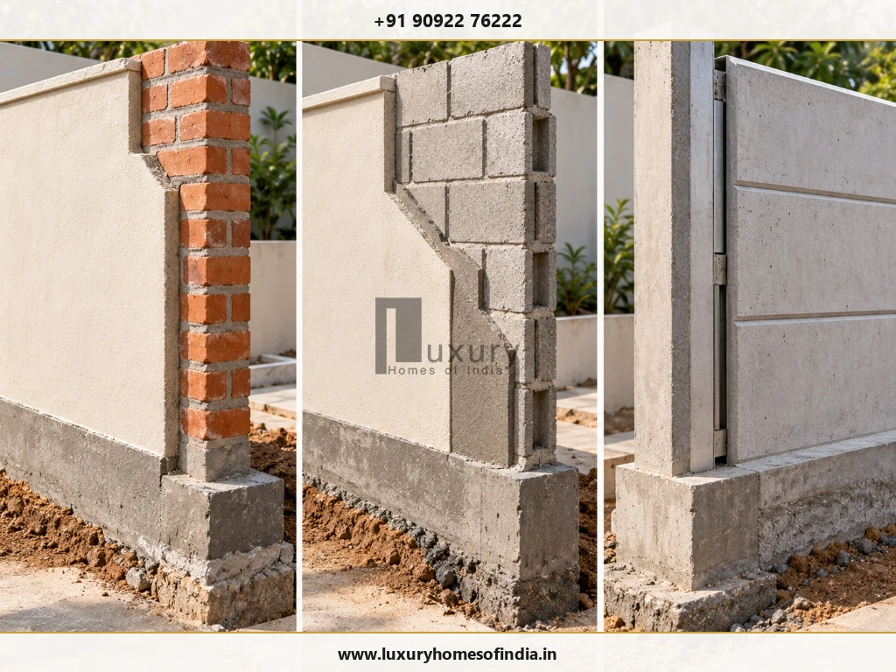
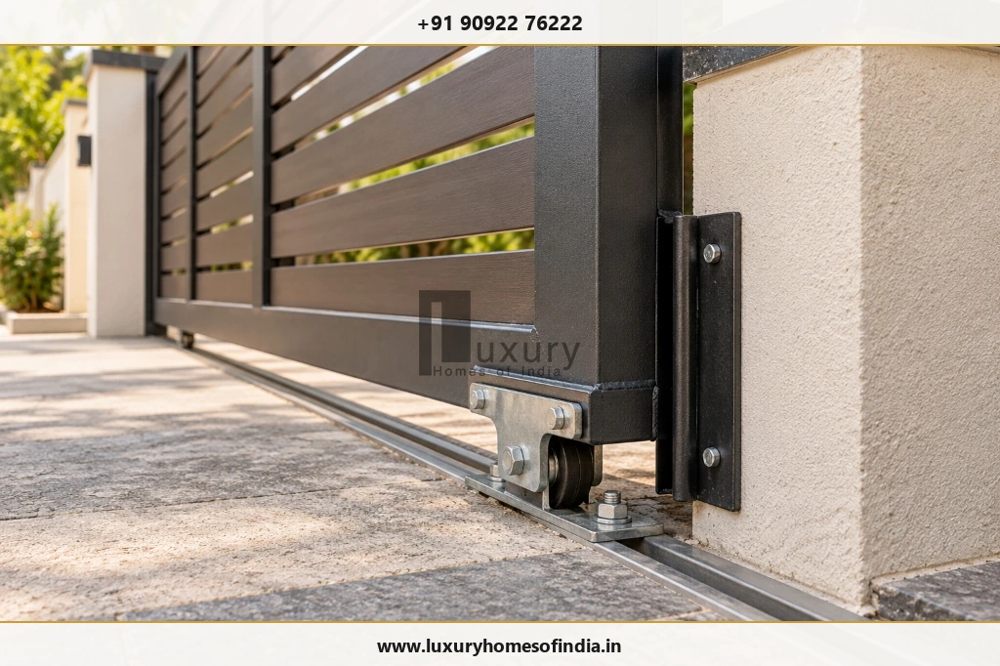
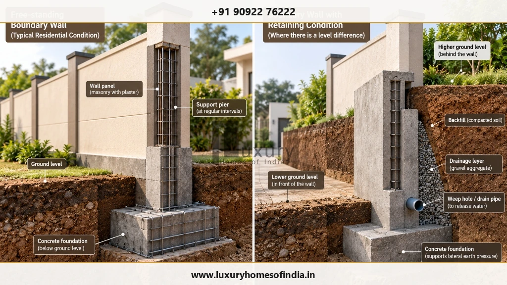
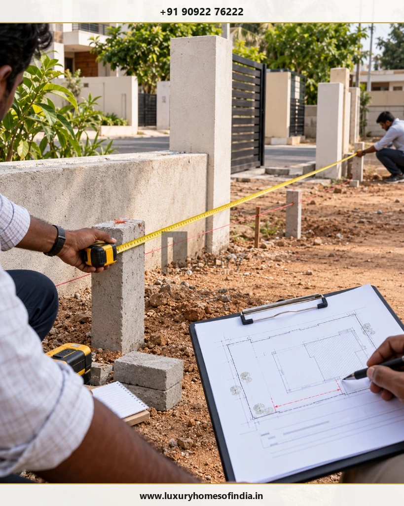

Planning a compound wall and main gate in Chennai? The total construction cost depends on the plot perimeter, wall height, foundation design, material, plastering, painting, gate dimensions and site conditions. For preliminary budgeting, the supplied market-reference ranges in this guide cover approximately ₹300–₹600 per running foot for precast RCC panel walls, ₹450–₹900 for basic masonry walls, and ₹700–₹1,500 for more fully finished masonry walls. These are provisional planning figures, not verified current market rates or a Luxury Homes of India (LHI) quotation. A gate is generally budgeted separately unless the quotation explicitly includes it. To estimate your project, measure the actual boundary, subtract the gate opening, confirm what the running-foot rate includes, and price excluded work separately. Foundation requirements, ground levels, retaining conditions, structural supports and local rules must also be checked before construction. The worked example below explains the calculation for a 30 × 40 ft plot, compares wall systems, and provides a checklist for obtaining comparable contractor quotations.

Contemporary Chennai villa perimeter featuring a reinforced masonry compound wall, architectural wall sconce lighting, horizontal timber-steel sliding gate, and dedicated pedestrian entry.
Introduction: What Determines Compound Wall and Gate Cost?
A compound wall and main gate are important components of a residential project. However, their cost is often considered separately from the main house construction budget.
The final amount depends on the length and height of the boundary, the foundation and support system, the selected wall material, the finish on each face, the gate design, and the condition of the site.
A straightforward masonry boundary with a standard fabricated gate has a different scope from a design with decorative piers, premium cladding, integrated lighting and an automated gate.
Before comparing prices, establish whether each quotation includes excavation, foundation concrete, structural supports, masonry, plastering, painting, coping, gate pillars, hardware, installation and taxes. Without a consistent scope, two apparently similar rates may represent very different projects.
1. Compound Wall Construction Cost in Chennai: Indicative Planning Rates
The following figures are carried forward from market observations. They are provisional planning references and require project-specific quotation verification before they are published as financial commitments.
| Wall Type | Provisional Planning Range | Main Cost Considerations |
|---|---|---|
| Precast RCC panel wall | ₹300–₹600 per running foot | Precast panels, slotted H-posts, transport freight, pit foundations, and mechanical alignment labour. |
| Basic brick or concrete-block wall | ₹450–₹900 per running foot | Wall thickness (4.5" vs 9"), foundation trench concrete, intermediate stiffener pillars, and masonry labour. |
| Finished masonry wall (Plaster & Paint) | ₹700–₹1,500 per running foot | Finished height (5–7 ft), structural plinth beam, double-face cement plaster, primer, weather-coat paint, and top coping. |
| RCC-framed wall with masonry infill | ₹700–₹1,500+ per running foot | Engineered isolated footings, tied plinth and coping tie beams, high wind-load reinforcement, and quality blockwork. |
| Premium or decorative boundary wall | Project-specific | Exterior porcelain/granite cladding, custom architectural piers, integrated conduit lighting, and CNC decorative grills. |

Technical cutaway comparison of the three primary residential boundary wall systems: wire-cut red clay brickwork, solid concrete block masonry, and precast RCC slotted post-and-panel construction.
What Does “Per Running Foot” Mean?
A running foot (RFT) measures the linear length of a wall along the ground. It is not the same as a square foot (sq. ft.) of wall surface area or plot area.
For example, if a 100-foot boundary wall has a verified quotation rate of ₹900 per running foot for a specified 5-foot wall height and agreed scope:
This is an illustrative calculation, not a quotation. The main entrance gate, structural gate pillars, and any excluded work must be priced separately.
2. How to Calculate Compound Wall Cost for Your Plot
Begin with the measured boundary perimeter. For a standard rectangular or square plot:
Subtract the clear width of the main vehicle gate and pedestrian gate opening to obtain the net wall length, assuming the opening is within that boundary and there are no other natural gaps.
Worked Example: 30 × 40 ft Plot (1,200 sq. ft. Plot Area)
A rectangular plot measuring 30 ft by 40 ft has a gross perimeter of:
2 × (30 + 40) = 140 running feet.
If the planned entrance includes a 12 ft wide sliding gate opening:
140 RFT − 12 RFT = 128 running feet of net compound wall.
Using the provisional finished-wall planning rates:
| Calculation Formula | Assumed RFT Rate | Illustrative Wall Amount |
|---|---|---|
| 128 RFT × ₹700 | Economy finished masonry (Single-side plaster) | ₹89,600 |
| 128 RFT × ₹1,000 | Standard finished masonry (Double-side plaster & paint) | ₹1,28,000 |
| 128 RFT × ₹1,500 | Premium RCC framed masonry with decorative coping | ₹1,92,000 |
These are wall-only calculations using assumed rates. They do not establish a complete project budget. The gate, gate pillars, foundation differences, additional supports, finishes and other exclusions will add to the total investment.
The calculation is also only an initial estimate. A measured site survey is essential where the plot is irregular, the boundary position is uncertain or ground levels slope significantly.
3. Main Gate Construction Cost in Chennai
The main gate is a separate budget item unless the contractor's scope specifically includes it. Its price depends on opening width, material sections, gate weight, fabrication quality, finish, hardware, operating system and installation.
The following gate budgets provide realistic planning allowances for residential projects in Chennai:
| Gate Type & Configuration | Provisional Planning Allowance | Key Features & Inclusions |
|---|---|---|
| Basic pedestrian wicket gate (3–4 ft) | ₹8,000–₹20,000 | Single-leaf mild steel or tubular GI frame with latch and standard cylinder mortise lock. |
| Simple fabricated mild-steel (MS) gate | ₹15,000–₹40,000 | Standard 10–12 ft swing or sliding gate with primer and synthetic enamel paint finish. |
| Larger double-leaf metal / GI gate | ₹30,000–₹80,000+ | Heavy-gauge galvanized steel tubing, zinc-chromate primer, and PU automotive-grade paint. |
| Designer gate (WPC / Laser-cut / CNC) | ₹40,000–₹1,00,000+ | Stainless steel or powder-coated MS frame with weather-proof Wood-Plastic Composite (WPC) louvers. |
| Automated motorized sliding or swing gate | ₹75,000–₹2,00,000+ | Italian rack-and-pinion sliding motor (e.g., CAME/BFT), remote controls, infrared safety sensors, and manual override. |

Heavy-duty bearing roller wheel anchored to an inverted-V stainless steel floor track, showing structural gate bracket and anchor bolts attached to reinforced concrete pillar.
What to Confirm Before Ordering a Gate:
- Clear Opening: Measure clear width between pillars and verify turning radius for SUV access.
- Operating System: Choose between sliding and bi-parting swing based on driveway clearance and slope.
- Corrosion Protection: Coastal Chennai air demands hot-dip galvanizing or epoxy primer to prevent rapid rust.
- Hardware Specifications: Heavy-duty sealed bearing rollers, stainless steel floor tracks, and anti-drop stoppers.
- Supporting Pillars: Concrete gate pillars must contain reinforcement cages to carry heavy dynamic cantilever loads.
- Automation Provisions: Conceal conduits for 230V power, safety photo-cells, and flashing warning beacons.
4. Brick Wall vs Concrete-Block Wall vs Precast RCC Wall
Each wall system has different construction and finishing requirements. The lowest raw material price does not necessarily result in the lowest installed cost.
Brick Masonry
Traditional country clay or wire-cut brick masonry allows complete flexibility in architectural detailing, niches, plastering and customized coping. Its total cost depends on brick quality, wall thickness, mortar, foundation, structural supports, labour and finish.
Concrete-Block Masonry
Solid and hollow concrete blocks are widely favored in Chennai for boundary walls due to uniform dimensions and rapid installation. They consume less joint mortar and deliver high compressive strength when supported by RCC columns at 8–10 ft centers.
Precast RCC Panels
Precast modular boundary walls consist of factory-cured concrete posts and interlocking horizontal panels. They eliminate wet brickwork on site and install in days. However, transport freight, heavy crane handling, and plain utilitarian aesthetics must be considered.
RCC Frame with Masonry Infill
A framed system with isolated footings, ground plinth beams, vertical RCC columns, and top coping beams is the engineering gold standard for tall boundaries, coastal areas subject to cyclonic wind loads, and unstable soils.
| Comparison Factor | Clay Brick Masonry | Concrete Blocks | Precast RCC Panels |
|---|---|---|---|
| Finish Quality | Smooth double-coat plaster and paint | Smooth plaster or textured finish | Self-finished raw concrete or spray paint |
| On-Site Civil Work | High (Wet mortar, curing, plastering) | Moderate (Wet blocks, curing, plaster) | Minimal (Dry panel slotting into post pits) |
| Custom Detailing | Highly adaptable to curves and steps | Good adaptability for rectilinear layouts | Limited to standardized factory modules |
| Cost Drivers | Bricks, sand, cement, curing, plaster labour | Block delivery, mortar, plaster labour | Freight transport, crane handling, post pits |
| Foundation Engineering | Continuous strip footing or ground beam | Continuous strip footing or ground beam | Isolated post foundation pits (typically 3–4 ft) |
5. Why Wall Height and Foundation Design Matter
A boundary wall must be designed for its intended height, support conditions and ground environment. It should never be treated as a uniform construction item regardless of site conditions.
Greater height, changes in ground level, filled earth, clayey soils and wind exposure all affect structural requirements. The foundation and support arrangement should be determined for the actual design rather than selected from a generic rate table.

Engineering comparison illustrating a standard free-standing boundary wall on isolated footing (left) versus a structural retaining boundary wall with heel/toe slab, drainage backfill, and weep holes (right).
Free-Standing vs. Retaining Wall Conditions
A wall that retains soil is fundamentally different from a free-standing boundary wall:
- Free-Standing Wall: Only needs to withstand its own dead weight and horizontal cyclonic wind pressure.
- Retaining Wall: Must resist tremendous lateral hydrostatic earth pressure from higher backfill soil. It requires an engineered cantilever RCC footing, structural reinforcement, a graded gravel drainage layer, and weep holes every 4–6 feet to release trapped moisture.
6. Additional Costs Homeowners May Overlook
A preliminary running-foot quote frequently covers only basic masonry. Before accepting a bid, verify whether the following 14 items are included:
- Site measurement, setting out, and trench excavation
- PCC foundation concrete bed and associated preparation
- RCC columns, stiffener piers, or support posts
- Reinforcement steel tonnage specified by drawings
- Masonry blocks or precast panel procurement
- Cement plastering on internal and external faces
- Exterior primer and multi-coat weather-shield paint
- Coping slab or terracotta top weather protection
- Reinforced gate pillars and hinge embedment plates
- Hinges, rollers, floor tracks, stops, and hardware
- Gate electric motor, sensors, wiring, and automation
- Ground levelling, backfilling, and compaction
- Peripheral stormwater drains or retaining weep holes
- Debris carting, transport freight, and applicable GST
7. Boundary Position, Wall Height and Local Rules
Before construction begins, confirm the legal boundary and the municipal regulations applicable to your property.

Site survey engineers checking boundary demarcations with steel tape, survey pegs, and approved plot layout drawings prior to foundation trenching.
Permitted wall heights, road frontage alignments, and splay corner requirements depend on CMDA building rules and local panchayat regulations. In Chennai, front boundary walls adjacent to streets are typically permitted up to 1.5 meters (approx. 5 ft), with upper portions often requiring see-through railings to maintain street visibility.
Essential Steps Before Excavation:
- Verify your Patta, Chitta, and FMB sketch against physical boundary survey pegs.
- Arrange official government surveyor demarcation if boundary stones are missing or contested.
- Confirm street alignment, splay corner cutoffs, and road-widening reservations.
- Record mutual boundary agreements in writing with adjoining plot owners before building shared party walls.
8. How to Control Compound Wall and Gate Costs Safely
Controlling costs without compromising boundary longevity requires practical engineering decisions:
1. Keep the Layout Simple
Straight perimeter lines with standardized 10-foot column spacing minimize timber formwork carpentry and rebar cutting wastage.
2. Compare Total Installed Rates
Evaluate masonry versus precast options on complete finished cost—including foundation, plaster, painting, and coping.
3. Finalise Gate Dimensions Early
Confirm sliding or swing operation and gate weight before casting gate pillars to avoid structural retrofitting.
4. Focus Decorative Finishes at Entry
Concentrate premium stone cladding, architectural lighting, and brass house nameplates at the front entrance gate piers.
9. Compound Wall and Gate Quotation Checklist
When requesting estimates from civil contractors, provide a clear scope sheet covering these 15 parameters:
- Measured plot perimeter and clear gate opening dimensions
- Finished wall height and masonry thickness (4.5" vs. 9")
- Wall construction material (Bricks, Solid Blocks, Precast)
- Foundation depth, width, and concrete mix specifications
- RCC column spacing, rebar diameter, and gate pillar size
- Plastering specification (1:4 cement-sand mix, thickness)
- Primer, putty, and exterior emulsion paint brand/coats
- Weathering coping design or terracotta tile caps
- Gate opening width, sliding/swing mechanism, and height
- Metal section thickness, galvanizing, and paint finish
- Heavy-duty roller tracks, lock hardware, and stoppers
- Automation motor brand, remote fobs, and sensor supply
- Site levelling, red-earth backfilling, and debris removal
- Applicable GST tax percentage and payment milestones
- Written list of explicit exclusions and defect warranty
Frequently Asked Questions
Conclusion: Plan the Boundary Wall and Gate Before Construction
The compound wall and main gate should be budgeted as part of the wider residential project. Their cost depends on the measured perimeter, wall height, foundation and support requirements, construction system, finish and gate specification.
Start by confirming the legal boundary, measuring the site and finalising the gate opening. Then compare itemised quotations using the same technical specifications and clearly stated exclusions.
Planning a Home or Boundary in Chennai?
Discuss your proposed project scope, design priorities and construction requirements with the LHI team using the verified contact details and service links approved for publication.
Explore Luxury Homes of India • Residential construction services • LHI Gallery • Contact Team
Disclaimer: Cost figures in this article are provisional planning estimates retained from the submitted draft. They have not been independently verified as current market rates or LHI prices. Actual costs depend on site conditions, specifications, labour, foundation design, finishes, gate requirements, applicable rules and contract terms. Obtain a site-specific estimate before making financial commitments.
Written by: LHI Editorial Team • Technical Review: LHI Civil & Structural Desk